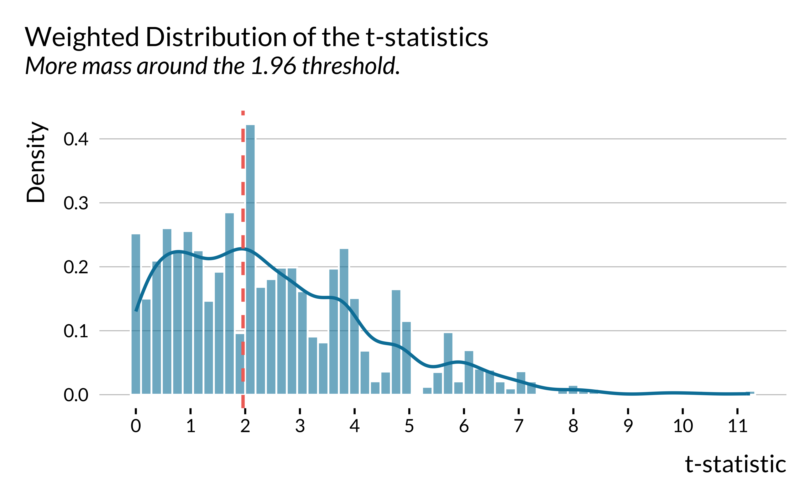
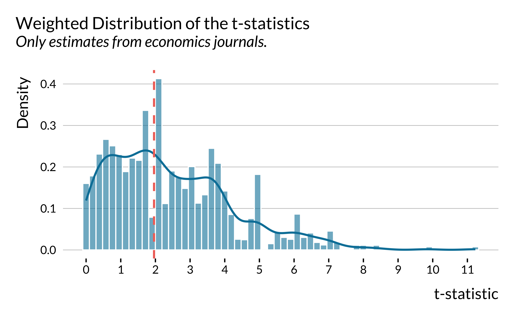

In this document, we carry out a retrospective power analysis of the causal inference literature on the acute health effects of air pollution.
We used an extensive search strategy on Google Scholar, PubMed, and IDEAS to retrieve studies that (i) focus on the short-health effects of air pollution on mortality and morbidity outcomes, and (ii) rely on a causal inference method. We exclude the very recent literature on the effects of air pollution on COVID-19 health outcomes. We found a corpus of 36 relevant articles. For each study, we retrieved the method used by the authors, which health outcome and air pollutant they consider, the point estimate and the standard error of results. We coded all main results but also those on heterogeneous effects by age categories and control outcomes (placebo tests).
Our document is organized as follows:
In the first section, we describe the coded variables and explain how we standardize effect sizes.
In the second section, we provide two pieces of evidence for publication bias in the literature.
In the third section, we compute the statistical power, the exaggeration and the probability to make a type S error for each paper using different guesses of true effect sizes. For this task, we rely on the very convenient retrodesign package.
Set-Up
Packages and Data
Show the packages used
library("groundhog")
packages <- c(
"here",
"tidyverse",
"knitr",
"retrodesign",
"kableExtra",
"patchwork",
"DT",
"mediocrethemes"
# "vincentbagilet/mediocrethemes"
)
# groundhog.library(packages, "2022-11-28")
lapply(packages, library, character.only = TRUE)
set_mediocre_all(pal = "leo")We load the literature review data:
Description of Coded Variables
We retrieved data 537 estimates from 36 articles. For each paper, we coded 25 variables:
paper_label: the first author and publication date of the article. This is the identifier of a study.paper_estimate_id: this is the unique identifier of a result. The median number of results reported by studies is 11.url: the internet link of the publication.publication_year: year of publication. Papers we consider were published between 2011 and 2022.field: whether the variable was published in economics or in epidemiology. 78 of studies are published in economics journals, the rest being published in epidemiology/public health journals.context: the location of the study.empirical_strategy: the empirical strategy used by researchers (conventional time series model, reduced-form, difference-in-differences,instrumental variable, etc). We display below the 5 most used empirical strategies for our 537 estimates:
| Empirical Strategy | Proportion (%) |
|---|---|
| instrumental variable | 44 |
| reduced-form | 17 |
| conventional time series | 14 |
| multi pollutant iv-lasso models | 6 |
| difference in differences | 5 |
outcome: the health outcome studied.outcome_type: whether the health outcome is a mortality or morbidity outcome. 43% of outcomes are related to mortality.outcome_subgroup: indicates which age group is studied.control_outcome: dummy equals to 1 if the health outcome is an outcome that should not be affected by the treatment of interest.independent_variable: the treatment of interest.temporal_scale: indicates at which temporal scale data are recorded (e.g., at the daily level).sample_size: number of observations.increase_independent_variable: the increase in the independent variable considered (e.g., a 1 \(\mu g/m^3\) increase in an air pollutant concentration).independent_variable_dummy: indicates whether the independent variable is binary. 27% of estimates are for a binary treatment.standardized_effect: indicates whether the estimates have already been standardized. 3% of estimates are already standardized.log_outcome: is the estimate expressed in relative term. 25% of estimates represent relative increase in the health outcome.mean_outcomeandsd_outcome: the average and the standard deviation of the outcome.mean_independant_variableandsd_independent_variable: the average and standard deviation of the treatment of interest.estimateandstandard_error: the values of the estimate and its standard error.first_stage_statistic: the first stage \(F\)-statistic.source_summary_stats: where we retrieve in the paper the figures on the average and standard deviation of variables.source_results: where we retrieve in the paper the figures on the estimates and standard errors.remarks: remarks on whether we have to do some computations on our own to retrieve the relevant information. For instance, we had to infer for very few papers the mean and standard deviation of a pollutant or an health outcome with statistics such as the median and the quartiles. We use the formula found here.open_data: whether the data are available to reproduce the findings of the study. Only 12% of results are directly reproducible.
The data set is as follows:
Computing Standardized Effect Sizes
We standardize the effect sizes using the standard deviations of the independent and outcome variables:
- If we denote \(\beta_{unstandardized}\) the unstandardized estimate, SD\(_{X}\) the standard deviation of the treatment and SD\(_{Y}\) the standard deviation of the health outcome, the standardized estimate is equal to \(\beta_{standardized} = \beta \times \frac{SD_{X}}{SD_{Y}}\).
- The standardized standard error SE\(_{standardized}\) is then equal to \(SE_{standardized} = SE_{unstandardized} \times \frac{\beta_{standardized}}{\beta_{unstandardized}}\).
In the case where authors used linear regression models with log-transformed variables, we rely on the formulas provided by Rodrguez-Barranco et al.(2017) to standardize the effect size.
We are able to standardize the effects of 63% of all estimates. We display below summary statistics on the distribution of the standardized effect sizes of causal inference methods:
| Min | First Quartile | Mean | Median | Third Quartile | Maximum |
|---|---|---|---|---|---|
| 0 | 0.0193351 | 0.9527143 | 0.0763023 | 0.2724913 | 34.99225 |
We see that half of the studies estimated effect sizes below 0.03 standard deviation.
We plot below the ratio of 2SLS estimates over OLS estimates:
For half of the studies reporting both an IV estimate and an OLS estimate, the ratio of these respective estimates is larger than 3.8. The median ratio of the ratio of the standard errors is 3.8.
Evidence of Publication Bias
Distribution of t-statistics
We plot the distribution of weighted t-statistics by following Brodeur et al.(2020) where the weights are equal to the inverse of the number of tests presented in the same table multiplied by the inverse of the number of tables in the article.

We then restrict the sample to studies published in economics journals. The figure remains essentially the same.

Estimated Effect Sizes versus Precision
We plot below the relationship between the absolute values of standardized estimates and the inverse of their standard errors. We do not include control outcomes (placebo tests) and conventional time series estimates.
For economics journals, we then compare top 5 to other journals.

Computing Statistical Power, Exaggeration and Type S Errors
In this section, we compute the statistical power, the exaggeration ratio and the probability to make a type S error for each study. We rely on the retrodesign package.
To compute the three metrics, we need to make an assumption about the true effect size of each study:
- First, we assess whether the design of each study would be robust enough to detect an effect size that is a bit lower than the observed estimate.
- Second, for instrumental variable strategy, we take the OLS estimate as the true value of the 2SLS causal estimand.
Overview
We define the true effect sizes as a decreasing fraction of the estimates. We want to see how the overall distributions of the three metrics evolve with as we decrease the hypothesized true effect size.
# test exaggeration and type s errors
data_retrodesign <- data_literature %>%
# drop control outcomes
filter(control_outcome == 0) %>%
# drop conventional time series models
filter(!(
empirical_strategy %in% c(
"conventional time series",
"conventional time series - suggestive evidence"
)
)) %>%
select(paper_label, paper_estimate_id, estimate, standard_error) %>%
# select statistical significant estimates at the 5% level
filter(abs(estimate / standard_error) >= 1.96)For each study, we compute the statistical power, the exaggeration ratio and the probability to make a type S error by defining their true effect sizes as decreasing fraction of the estimates.
# run retrospective power analysis for decreasing effect sizes
data_retrodesign_fraction <- data_retrodesign |>
crossing(percentage = seq(from = 30, to = 100) / 100) |>
mutate(hypothetical_effect_size = percentage * estimate) |>
mutate(
retro = map2(hypothetical_effect_size, standard_error,
\(x, y) retro_design_closed_form(x, y))
#retro_design returns a list with power, type_s, type_m
) |>
unnest_wider(retro) |>
mutate(power = power * 100) |>
pivot_longer(
cols = c(power, type_m, type_s),
names_to = "metric",
values_to = "value"
) %>%
mutate(
metric = case_when(
metric == "power" ~ "Statistical Power (%)",
metric == "type_m" ~ "Exaggeration Ratio",
metric == "type_s" ~ "Type S Error (%)"
)
)
# compute mean values of metrics for the entire literature
data_retrodesign_fraction_mean <- data_retrodesign_fraction %>%
group_by(metric, percentage) %>%
summarise(median_value = median(value))We then plot the power and the exaggeration ratio metrics for the different scenarios (we do not report Type S error as this issue is limited in this setting):
We display below summary statistics for the scenario where true effect sizes are equal to the observed estimates reduced by 25%:
| Metric | Min | First Quartile | Mean | Median | Third Quartile | Maximum |
|---|---|---|---|---|---|---|
| Exaggeration Ratio | 1.0 | 1.1 | 1.3 | 1.3 | 1.5 | 1.8 |
| Statistical Power (%) | 31.4 | 46.2 | 65.5 | 62.3 | 85.0 | 100.0 |
| Type S Error (%) | 0.0 | 0.0 | 0.0 | 0.0 | 0.0 | 0.0 |
And here when estimates are divided by two:
| Metric | Min | First Quartile | Mean | Median | Third Quartile | Maximum |
|---|---|---|---|---|---|---|
| Exaggeration Ratio | 1.0 | 1.4 | 1.7 | 1.7 | 2.0 | 2.5 |
| Statistical Power (%) | 16.6 | 23.7 | 41.3 | 32.9 | 51.5 | 100.0 |
| Type S Error (%) | 0.0 | 0.0 | 0.0 | 0.0 | 0.0 | 0.0 |
OLS Estimates as True Effect Sizes
For statistically significant 2SLS estimates, we define the true values of effect size as the corresponding OLS estimates. We assume that (i) the causal estimand targeted by the naive and instrumental variable strategy is the same (i.e., we are in the case of homogeneous constant treatment effects), (ii) that there are no omitted variables and (iii) no classical measurement errors in the air pollution exposure.
We retrieve 98 2SLS estimates that were statistically significant at the 5% level and had
The median statistical power is 8.4% and the median exaggeration ratio is 4.5. 2.04% of IV designs have adequate power (i.e. greater than 80%).